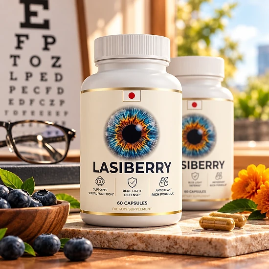
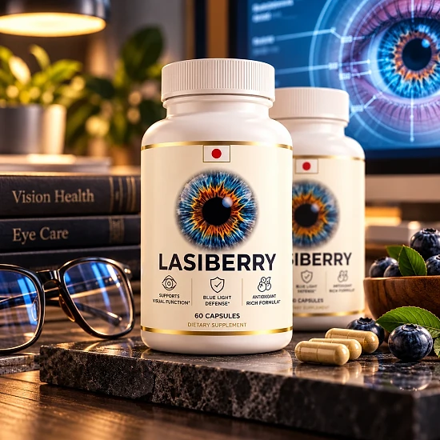
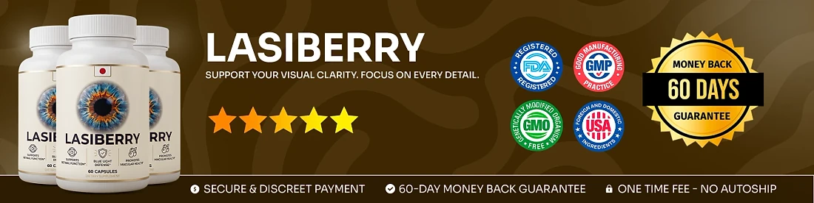

What Is Lasiberry And How Does It Work?
Lasiberry is a dietary supplement in capsule form, with 60 capsules in each bottle, created to support healthy vision and overall eye health. It is meant for people who spend long hours in front of screens, read a lot or simply want to take care of their eyes as they get older.
According to the official website, Lasiberry combines five natural ingredients and antioxidants: Lutein, Zeaxanthin, Bilberry extract, Eyebright extract and Vitamin A. You take two capsules a day with water.
How is it designed to work? The brand explains the formula in a few parts. Lutein and Zeaxanthin, two carotenoids found in the macula, are included to help filter blue light from phones and computers and to support contrast. Bilberry is there to support the small blood vessels that feed the eye and vision in low light. Eyebright is added for eye comfort, and Vitamin A supports normal vision, including at night.
The brand says the goal is sharper vision, more rested eyes and long-term support against daily wear, as part of a healthy routine.
Orders are processed by BuyGoods, and every purchase is a one-time payment with no auto-ship, according to the official FAQ.
Results may vary from person to person, and a supplement works best alongside regular eye exams, screen breaks, sunglasses outdoors and a diet rich in leafy greens. It is not a replacement for glasses, contact lenses or any treatment from your eye doctor, and the website does not promise a fixed timeline, so it is fair to give the routine a few weeks before judging how you feel.
Lasiberry is a dietary supplement and is not intended to diagnose, treat, cure, or prevent any disease.
Lasiberry Ingredients
The official sales page lists five ingredients in the Lasiberry formula, a mix of carotenoids, plant extracts and a vitamin that are common in eye health supplements:
Lutein: a carotenoid found in the macula, known for helping filter blue light and reduce visual fatigue.
Zeaxanthin: a partner carotenoid concentrated in the center of the retina, associated with contrast and sharpness.
Bilberry Extract: a berry extract traditionally linked to vision in low light and healthy blood vessels in the eye.
Eyebright Extract: a plant traditionally used for eye comfort and tired, irritated eyes.
Vitamin A: an essential vitamin that supports the cornea and normal vision, including at night.
The website does not publish a Supplement Facts panel, so the amount of each ingredient is not shown online. The descriptions above reflect how these ingredients are generally known, not proven results. Check the label on the bottle you receive and show it to your doctor, especially if you take other vitamins that already contain Vitamin A. The label on the bottle is the only reliable way to confirm the exact amounts.
Lasiberry Side Effects
The official website says Lasiberry is made with high-purity ingredients under strict quality standards and does not list specific side effects. Most of its ingredients are nutrients that are also found in everyday foods.
The brand recommends that pregnant or nursing women, anyone under 18 and people with pre-existing medical conditions consult a healthcare professional before use. Anyone who already has an eye condition and follows a treatment plan should talk to their eye doctor first, because a supplement should never replace that care.
Vitamin A is the ingredient that deserves the most attention: too much of it can be harmful, especially during pregnancy, so add up what you get from other multivitamins before you start. Bilberry may interact with blood thinners and with medicines for blood sugar, and lutein in high amounts can give the skin a slight yellow tone in some people.
Since the full label is not published online, bring the bottle to your appointment. Stop using it and seek medical advice if you notice headaches, stomach upset, any sudden change in your vision or any other unusual reaction. Keeping the original bottle helps a professional check exactly what you took.
Lasiberry Dosage
According to the official FAQ, the directions are simple: take 2 capsules daily with a glass of water (about 8 oz / 240 mL).
The brand recommends taking them in the morning or at a set time each day, so the habit stays consistent and the nutrients are absorbed steadily. Taking the capsules with a meal that contains some healthy fat may also help, since lutein, zeaxanthin and Vitamin A are fat-soluble.
Each bottle holds 60 capsules, which equals a 30-day supply. Do not take more than the label directions, and keep in mind the Vitamin A you may already get from other supplements.
The brand suggests longer use so ingredients like lutein and zeaxanthin can build up over time. Results vary from person to person, and keeping a short note of how your eyes feel after screen time each week can help you judge the routine honestly. If you take regular medication, ask your doctor before you begin.
Lasiberry works best together with regular eye exams, the 20-20-20 rule for screen breaks, sunglasses outdoors and good sleep every night, all year round.
Lasiberry – Refund Policy
Every order of Lasiberry is covered by a 60-day guarantee counted from the date of purchase, which gives you time to try the capsules and decide whether they are right for you.
According to the refund policy on the official website, there is a minimum trial period of 30 days, and the return process must start within 60 days of the purchase date. Only sealed bottles are eligible, shipping and customs fees are not refunded, return shipping is paid by the customer, and a 20% restocking fee is deducted from the total.
Step 1 – Request the authorization code: email the support team at contact@customercs.com to start the return. The team usually replies within 48 business hours.
Step 2 – Send the bottles back: follow the return instructions you receive with the code.
Step 3 – Receive your refund: once the returned items are received and verified, the refund goes to the original payment method and may take 5 to 10 business days to appear on your statement. You will receive a confirmation email.
Keep your unopened bottles sealed until you are sure about the product, and save your order confirmation email from BuyGoods so you have your order number ready when you write.
Lasiberry Customer Reviews
-
Sarah Thompson — Houston, TXVerified Purchase – 6 Bottles
“… just a few weeks in, everything changed. Thanks to Lasiberry, I’ve reclaimed my sharp focus and visual clarity, and reading fine print has never been easier.”
-
Robert Anderson — San Diego, CAVerified Purchase – 6 Bottles
“Before Lasiberry, I felt like my eyesight was steadily slipping away—always struggling with nighttime driving, tired eyes, and blurry text. But within weeks, everything started to shift. Thanks to Lasiberry, my vision is sharper, clearer, and much more reliable than it’s been in years.”
-
Emily Miller — Denver, COVerified Purchase – 6 Bottles
“I was skeptical at first … Now, I wake up each day with clear sight and no eye fatigue, ready to read or drive with confidence. Lasiberry made my eyes feel young again!”
Lasiberry – Where To Buy
Lasiberry is sold through its official website, where orders are completed through a secure checkout from BuyGoods, an established online retailer. According to the FAQ, every purchase is a one-time payment with no auto-ship, recurring charges or hidden fees.
Bottles listed by unknown third-party sellers may look the same, but there is no way to verify their origin, their expiry date or how they were stored, which raises real concerns about quality and safety. Purchases made outside the official source may not be covered by the 60-day guarantee.
That is why most buyers prefer to order Lasiberry directly from the official website. Going to the source means receiving the authentic original product, with access to the support team and the full guarantee.
Before completing your order, make sure you are on the official Lasiberry website to avoid counterfeit products. Checking the web address in your browser before you pay takes only a moment and helps protect your order.
To ensure you’re getting the authentic product, most users choose to visit the official website.
Is Lasiberry A Scam?
Based on what the official website shows, Lasiberry does not appear to be a scam. It is a real capsule supplement for eye health, sold through BuyGoods, an established retailer.
Several points speak in its favor: the five ingredients are named on the website, they are well-known nutrients for eye health, the directions are clear, there is a support email with a stated reply time, the refund rules are written out in detail, and every order is a one-time payment without auto-ship.
There are also points to keep in mind. The website does not publish a Supplement Facts panel, so the amount of each ingredient is unknown. Some statements on the sales page go further than a supplement can promise, so it is wise to read them with caution. The refund policy is also stricter than many: only sealed bottles qualify, return shipping is paid by the customer, and a 20% restocking fee applies.
For adults who want a simple daily capsule to support healthy vision and eye comfort, Lasiberry may be worth considering, ideally ordered from the official website and reviewed first by a doctor, especially by anyone who has an eye condition or already takes Vitamin A.
For those who want to verify product details or check current availability, the official Lasiberry website remains the safest option.

Check Availability On Official Website
